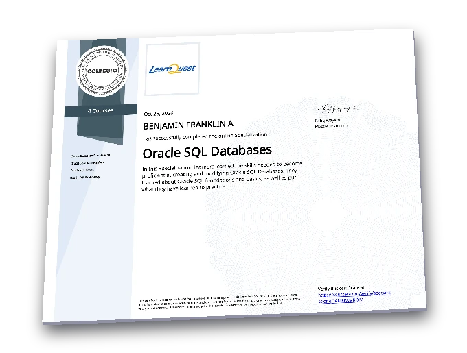
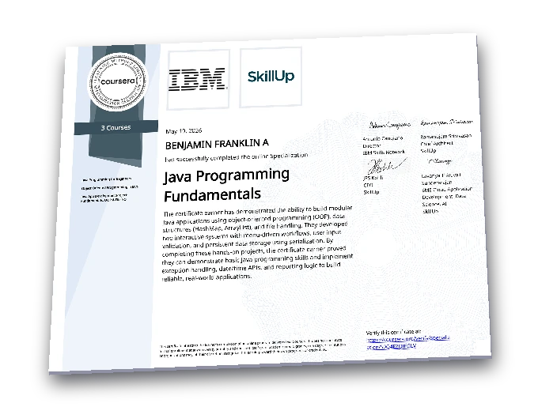
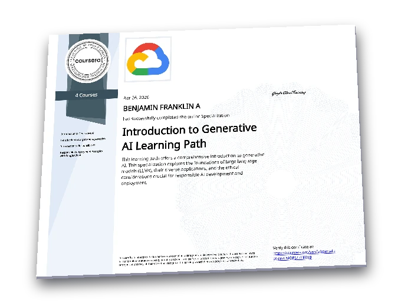
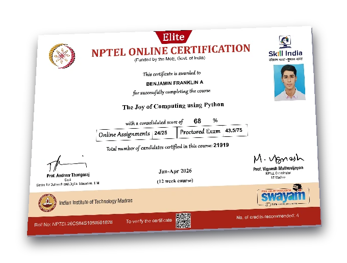

Second-year B.E. Computer Science and Engineering student with a strong foundation in C++, Java, SQL, web technologies, and cloud computing.
Completed a C++ programming internship at Thiranex, serves as an AWS Student Builder Campus Leader and GeeksforGeeks Campus Mantri, and builds AI-assisted applications with Amazon Bedrock, Kiro, and Claude. Won first place at EUREKA! 2026 (E-Cell, IIT Bombay) and focuses on software development, AI-enabled applications, and practical problem-solving.

HMT Restock Radar

Python, Requests, HTML, CSS, JavaScript
Radar checks HMT watch availability and sounds an alert when a watch comes back in stock. I designed and tested the alert behavior and guided the implementation with Claude.
AI Email Intelligence System

n8n, Gmail, Ollama, Llama 3, Notion
An n8n workflow that turns Gmail snippets into a prioritized inbox in Notion. Llama 3 runs locally via Ollama to summarize and categorize each snippet. The workflow checks for a summary, category, and priority and attempts one repair if a parsed response is missing a required field.


➤C++ Programming Intern, Thiranex
April to May 2026
Built four console applications using object-oriented C++, including a library management system and a tic-tac-toe game.
➤Student Builder Campus Leader, AWS
August to September 2026
Led campus cloud engineering initiatives focused on building and deploying software on AWS.
➤Campus Mantri, GeeksforGeeks
June 2026 to present
Share technical learning opportunities with fellow students through LinkedIn and direct campus outreach.
|
 Oracle SQL Databases LearnQuest · Coursera · Oct 2026 View certificate · Verify |
 Java Programming Fundamentals IBM & SkillUp · Coursera · May 2026 View certificate · Verify |
|
 Introduction to Generative AI Learning Path Google Cloud · Coursera · Apr 2026 View certificate · Verify |
 The Joy of Computing using Python NPTEL · IIT Madras · Jan–Apr 2026 View certificate · Verify |

➤EUREKA! 2026, Startup Pitching · First place
My team, Zenith Labs, won the startup pitching competition at EUREKA! 2026, organized by E-Cell, IIT Bombay.
➤Google Student Ambassador Program · Top Prompt Creator
My Game Night Edition prompt became a playable game in Gemini Canvas.

| Programming | C++, C, Java, Python |
|---|---|
| Web and databases | HTML, CSS, JavaScript, Oracle SQL |
| Cloud and AI | AWS, Amazon Bedrock, Amazon Nova Pro, Strands Agents, Ollama, Llama 3 |
| Automation and tools | n8n, Notion, Git, GitHub, Kiro, Claude |
- n8n - Workflow Automation
- Java · Object-oriented design
- Data structures and algorithms · Problem-solving and interview fundamentals
- Oracle SQL · Database design and querying
- Python · Backend development and automation
- AWS · Cloud architecture



Built in Tamil Nadu, India